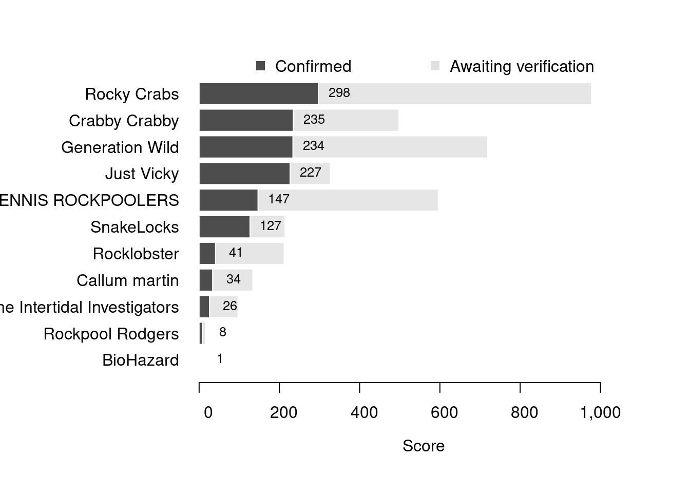

Content
You can view all the wildlife recorded at this event on iNaturalist.


| Records | 306 |
| Species | 101 |
| Verified species | 47 |
| Observers | 14 |
| Potential score | 2,112 |
| Confirmed score | 861 |
| Top verified species | Rissoa lilacina |
| Top species rarity score | 100 |
| Registered participants | 29 |
| Children attending | 14 |
Congratulations to Rocky Crabs for taking the gold medal in this BioBlitz Battle! And well done to everyone for a great game and some fantastic wildlife finds.
| Team | Records | Potential Score | Confirmed Score |
|---|---|---|---|
| Rocky Crabs | 82 | 978 | 298 |
| Crabby Crabby | 41 | 498 | 235 |
| Generation Wild | 55 | 719 | 234 |
| Just Vicky | 6 | 327 | 227 |
| CSM TENNIS ROCKPOOLERS | 64 | 596 | 147 |
| SnakeLocks | 18 | 214 | 127 |
| Rocklobster | 17 | 212 | 41 |
| Callum martin | 12 | 134 | 34 |
| The Intertidal Investigators | 7 | 97 | 26 |
| Rockpool Rodgers | 3 | 16 | 8 |
| BioHazard | 1 | 1 | 1 |

| Participant | Records | Potential Score | Confirmed Score |
|---|---|---|---|
| milliemb | 82 | 978 | 298 |
| KW | 41 | 498 | 235 |
| vickybarlow | 6 | 327 | 227 |
| Echo Severs | 38 | 690 | 203 |
| Conservation Explorers | 18 | 214 | 127 |
| tedcollins12345 | 33 | 382 | 104 |
| Amelie Churchill | 26 | 408 | 50 |
| lilyhh | 17 | 92 | 48 |
| Sarah Charles | 17 | 212 | 41 |
| pangolin_123 | 12 | 134 | 34 |
| hattiep123 | 7 | 97 | 26 |
| clairer2026 | 3 | 16 | 8 |
| hollyb118 | 5 | 46 | 1 |
| barneychfal | 1 | 1 | 1 |
A total of 8 species have a verified rarity score of 37 or higher.


Community verified records only
Click any image to view the taxon on iNaturalist.
| Name | Rarity Score | |
|---|---|---|

|
Rissoa lilacina | 100 |

|
Flustrellidra hispida | 43 |

|
sand binder - Rhodothamniella floridula | 41 |

|
Rissoa parva | 41 |

|
Spurilla neapolitana | 41 |

|
Gaudy Babakina - Babakina anadoni | 39 |

|
Small Needle-whelk - Bittium reticulatum | 39 |

|
Warty Venus Clam - Venus verrucosa | 37 |

|
Ascidia mentula | 32 |

|
European Bittersweet Clam - Glycymeris glycymeris | 28 |

|
Common Dragonet - Callionymus lyra | 25 |

|
Sap-sucking Slug - Elysia viridis | 18 |

|
false Irish moss - Mastocarpus stellatus | 18 |

|
Montagu’s Blenny - Coryphoblennius galerita | 17 |

|
Oyster-thief - Colpomenia peregrina | 16 |

|
Hairy Sea-mat - Electra pilosa | 16 |

|
Emerald green paddle worm - Eulalia clavigera | 16 |

|
Variegated Scallop - Mimachlamys varia | 15 |

|
Blue-rayed Limpet - Patella pellucida | 13 |

|
Longspined Bullhead - Taurulus bubalis | 13 |

|
Dahlia Anemone - Urticina felina | 13 |

|
Star Tunicate - Botryllus schlosseri | 12 |

|
European Painted Top Shell - Calliostoma zizyphinum | 12 |

|
Flat Periwinkle - Littorina obtusata | 12 |

|
Christmas Tree Worms - Spirobranchus | 12 |

|
Netted Dogwhelk - Tritia | 12 |

|
Thongweed - Himanthalia elongata | 11 |

|
Grey Topshell - Steromphala cineraria | 11 |

|
Strawberry Anemone - Actinia fragacea | 10 |

|
Hairy Porcelain Crab - Porcellana | 10 |

|
Cushion Star - Asterina gibbosa | 9 |

|
Blue Mussel - Mytilus edulis | 9 |

|
Velvet Swimming Crab - Necora puber | 9 |

|
Purple Topshell - Steromphala umbilicalis | 9 |

|
Gutweed - Ulva intestinalis | 9 |

|
Montagu’s Crab - Xantho hydrophilus | 9 |

|
Atlantic Beadlet Anemone - Actinia equina | 8 |

|
snakelocks anemone - Anemonia viridis | 8 |

|
Edible Crab - Cancer pagurus | 8 |

|
Common Prawn - Caridea | 8 |

|
Saw Wrack - Fucus serratus | 8 |

|
bladder wrack - Fucus vesiculosus | 8 |

|
Shanny - Lipophrys pholis | 8 |

|
Common Periwinkle - Littorina littorea | 8 |

|
Atlantic Dogwhelk - Nucella lapillus | 8 |

|
European Green Crab - Carcinus maenas | 7 |

|
Hermit Crabs - Paguroidea | 5 |